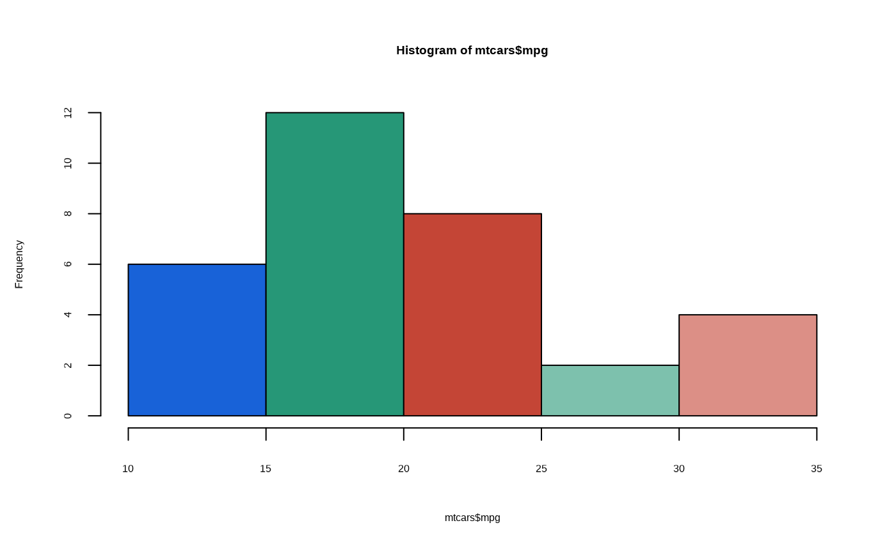

As of the 2025 HDX website redesign, hdx_pal_discrete() utilizes the
primary, brand, and error hues for up to a 12 element discrete scale. These
supersede the original sapphire, mint, and tomato hues, kept available
individually via hdx_pal_sapphire(), hdx_pal_mint(), and
hdx_pal_tomato() for backwards compatibility. Pass design = "legacy" to
instead get the original sapphire/mint/tomato 12 element scale for reports
that aren't ready to move to the new look.
hdx_pal_discrete(design = c("2025", "legacy"))
hdx_pal_sapphire()
hdx_pal_primary()
hdx_pal_brand()
hdx_pal_error()
hdx_pal_tomato()
hdx_pal_mint()
hdx_pal_gray()A palette function.
hdx_pal_primary(), hdx_pal_brand(), and hdx_pal_error() allow for a
4 element discrete scale using only the specified color. These are color
ramps with a range from dark, normal (HDX standard), light, and ultra
light. hdx_pal_mint(), hdx_pal_tomato(), and hdx_pal_sapphire()
provide the same 4 element ramps for the original palette.
Other color hdx:
hdx_color_list,
hdx_colors()
hist(mtcars$mpg, col = hdx_pal_discrete()(5))
